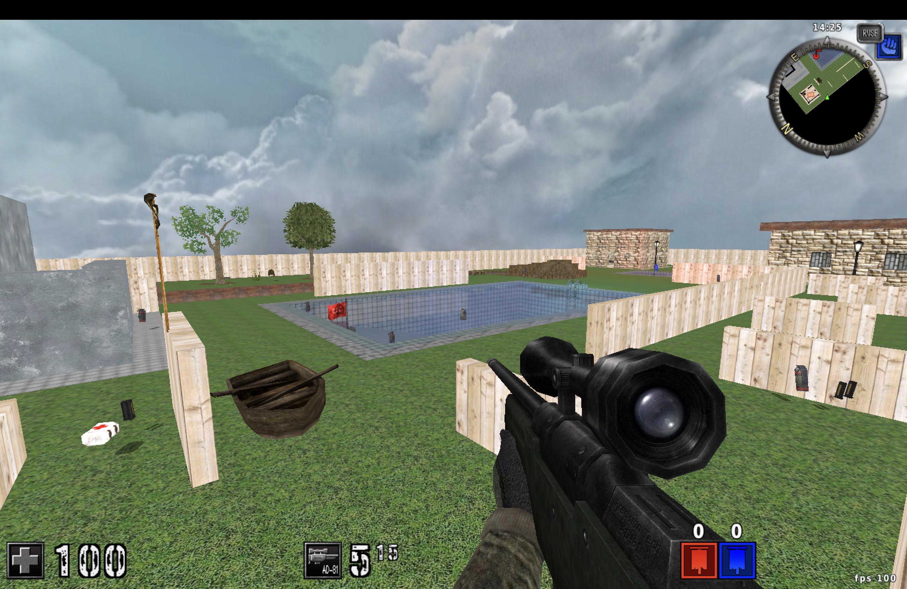

kk_lemonade: a vapor splash
Smaller map inspired by the Miami Pink House.

kk_gamertime: the 1337 gamer condo
The fan-favorite DM map of a messy apartment. Now expanded in kk_gamertime2!

kk_poolparty: a pool party!
For small CTF matches. You can jump-headshoot people behind the fences if you time it just right.

hg_green: an abandoned mansion
hot_gril's main map, surprisingly cozy. Now upgraded in 1.3, also xmas version bundled.

kk_compton: Crips vs Bloods
Two sides of a bad neighborhood separated by a river and bridges.

kk_davy_jones: a cursed pirate ship
Arrr! Take yer shots from afar, or plunge below deck to take matters into yer own hands!

kk_souk: an Arabian souk
A marketplace with both narrow alleys and long shootout zones.

kk_italy: a castle town
This map is basically a long-range shootout between the blue team in the castle and the red team in the streets.

hg_minecraft: a Minecraft town
A battle between a battered village and a cave of mobs.

kk_haunted_mansion: a spooky mansion
Based on Luigi's Mansion, this supernatural map features two main hallways and several rooms with tricks up their sleeves.

kk_complex: Pripyat grad student housing
Inspired by travels to ex-Soviet countries, this abandoned housing complex combines creepy brutalist architecture and home furnishings.